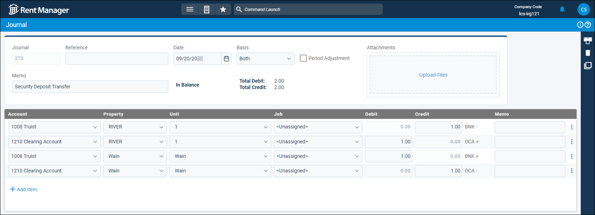

Source: https://rmxhelp.rentmanager.com/Topics/Express/CSH/Journal-Details.htm
Journal Details (Page)
Journal entries are manual accounting entries that debit the balance of certain general ledger (GL) accounts and credit the balance of other GL accounts for selected properties. The Journal details page allows you view and manage journal information and, when applicable, reverse and memorize the journal.
Related Privileges
| Group | Privilege | Column |
|---|---|---|
| Accounting | Journal entries | View |
| View journal register | Enabled |
For more information, refer to Control User Access.
To view a journal's details page, go to  arrow_forward Accounting arrow_forward Journals arrow_forward Journals and select a journal from the list.
arrow_forward Accounting arrow_forward Journals arrow_forward Journals and select a journal from the list.

At the top right of the page, click  to view information regarding when and by which user the journal was created and updated.
to view information regarding when and by which user the journal was created and updated.
Journal Information
This section displays general information about the journal's contact and administrative items. The following fields are available in this section of this page.
| Field | Description | ||||||
|---|---|---|---|---|---|---|---|
|
Journal |
The system-generated number of the journal entry. |
||||||
|
Reference |
A short note to identify the purpose of the journal entry. |
||||||
|
Date |
The date on which this journal entry takes effect. |
||||||
|
Basis |
Related Privileges
For more information, refer to Control User Access. The accounting method for how the journal entry affects financial reports. |
||||||
|
|||||||
|
Period Adjustment |
Notates that this journal entry is an adjusting entry. This allows for the entry to optionally be excluded from financial reports. |
||||||
|
Attachments |
Click Upload Files to attach any relevant documents or images to the journal entry. |
||||||
|
Memo |
A longer note to provide further information about the purpose of the journal entry transaction (e.g., Security Deposit Transfer). |
||||||
|
Balance |
If the Total Debit and Total Credit are equal, In Balance displays. If they are not equal, |
||||||
|
Total Debit |
The total amount of debit entries in the journal. |
||||||
|
Total Credit |
The total amount of credit entries in the journal. |
||||||
|
Reconciled |
If the journal entry was reconciled, Reconciled displays at the top in red. The date of the reconciliation displays when you hover over it. |
Journal Details
This section displays the journal's credit and debit entries. The following columns are available in this section of this page.
| Column | Description |
|---|---|
|
Account |
The GL account to adjust with this journal entry. |
|
Property |
The property involved in the account adjustment. |
|
Unit |
If applicable, the unit associated with the account adjustment. |
|
Job |
If applicable, the name of the job to track the journal entry. For more information, refer to Jobs (Page). Related Preferences In order to use the job costing tool in Rent Manager, Enable job costing must be checked in system preferences. For more information, refer to General Options (System Preferences). |
|
Debit |
The amount that debits the specified account. Debits increase asset and expense accounts. |
|
Credit |
The amount that credits the specified account. Credits increase income, equity, and liability accounts. |
|
Memo |
An optional additional message regarding this account adjustment (e.g., Asset Depreciation, Security Deposit Transfer, Company Payroll). |